Alfa por las dos caras
Al asignar un mapeado UV sobre un objeto sin material, Blender se comporta de un modo muy inteligente; por ejemplo, ya hemos visto cómo Blender entiende que si el objeto no tiene material, pero se le ha mapeado una textura, lo lógico es que se vea en el motor de juegos y por tanto le asigna por defecto la opción Textura en caras.
Eso mismo ocurre cuando lo que mapeamos es una textura con transparencias. Vamos a hacer una bonita lámpara de araña para nuestro museo virtual.
En su momento, en Material didáctico: Galileo en Pisa, vimos una extraordinaria extensión para importar imágenes. Se comentó que esa importación deja el material correctamente tanto para Blender Estándar como para Blender Game. Lo que aquí vamos a ver es el proceso manual por el cual somos nosotros los que configuramos todo; sólo así comprenderemos qué hace la extensión Import Images as Planes y cuáles son las opciones que debemos manipular si deseamos un resultado diferente.
Esta es la imagen que usaremos (es un PNG con fondo transparente).
Módulo para lámpara de araña
|
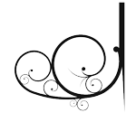
Módulo para lámpara de araña // Autor: Joaclint // Licencia: CC-SA-BY (Creative Commons)
|
Sacamos un plano a escena y lo rotamos 90º en X ("RX90"). Si es necesario lo escalamos ("S") para que vaya colocándose cerca de su destino final. Recordamos que no debe tener material asignado.
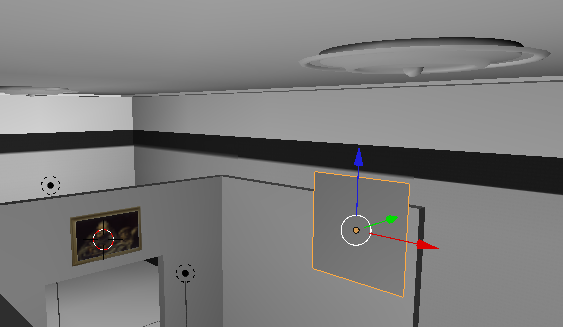En ese plano, y según el método ya aprendido mapeamos la imagen guardada en nuestro disco duro.
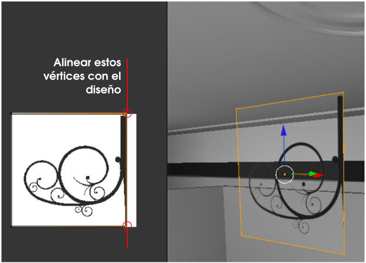Si activamos la simulación, todo parece perfecto pero no lo es. Estos son los problemas:
- Los contornos no son de calidad. Eso se soluciona fácilmente activando la opción Premultiplicar en el cuadro Propiedades ("N") del Editor UV
 (no del editor Vista 3D).
(no del editor Vista 3D).
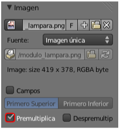
- Si hacemos órbita para mirar la parte de atrás del plano vemos que la imagen no se mapea por esa cara. Y este es el problema que no tiene solución si el objeto carece de material.
Configurar el material
Comenzamos por darle un Material  al plano y configurar a mano. En ese momento todo parece irse al traste... (el mapeado desaparece).
al plano y configurar a mano. En ese momento todo parece irse al traste... (el mapeado desaparece).
Lo primero, como siempre, es activar Textura en caras para asegurarnos que se renderiza en la simulación ("P").
Como estamos en la modalidad de trabajo Blender Game en el panel Material  aparece una botonera llamada Opciones de juego:
aparece una botonera llamada Opciones de juego:
- Activamos la transparencia con Mezcla alfa: Fusionar alfa.
- Vemos que la opción Desechar caras traseras está activada; lo que procede es desactivarla para que se renderice la textura por las dos caras en la simulación ("P").
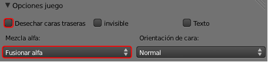
No estaría mal descender casi a 0.000 la Intensidad de Especular para que quede casi mate.
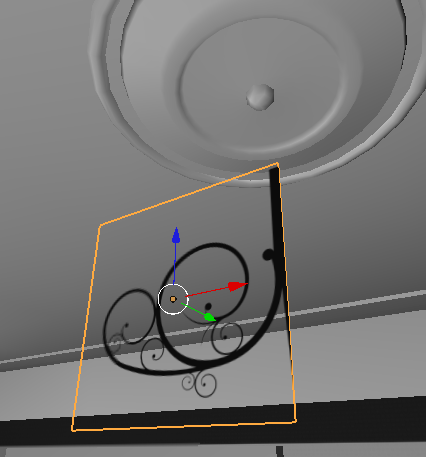En realidad lo que queda ahora no es un trabajo de mapeado sino de modelado pero damos un breve resumen del método. Queremos que este mapeado se repita ocho veces para conseguir la sensación de lámpara de araña.
Esto es lo que hay que hacer:
- Pasamos a Modo Edición
 y seleccionamos
y seleccionamos  uno de los vértices de la parte interior y hacemos Malla/Adherencia/Cursor a seleccionado.
uno de los vértices de la parte interior y hacemos Malla/Adherencia/Cursor a seleccionado.
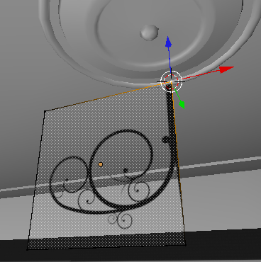
- Volvemos a Modo Objeto
 y usamos Origen/Origen al Cursor 3D en el cuadro Herramientas ("T"). Esto permite controlar los giros sin necesidad de cambiar de Centro de pivotaje.
y usamos Origen/Origen al Cursor 3D en el cuadro Herramientas ("T"). Esto permite controlar los giros sin necesidad de cambiar de Centro de pivotaje.
- Seguimos en Modo Objeto para hacer en una sola edición un duplicado y rotarlo 45º en Z ("Shift_D RZ45"). También podemos hacerlo en dos pasos con "Shift_D Intro" y después la rotación de 45º en Z ("RZ45").
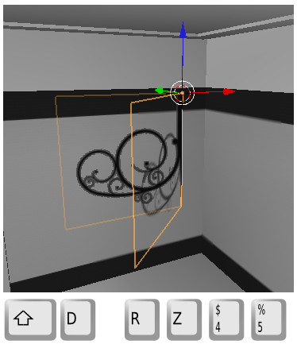
- Seleccionamos el último objeto (debería haber quedado seleccionado) y vamos repitiendo la misma operación hasta completar los ocho brazos de la araña.
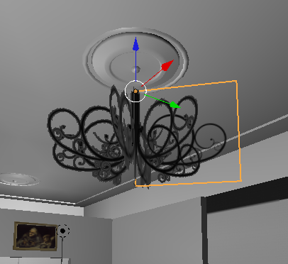
No nos alarmamos al ver que sólo el plano seleccionado muestra la transparencia con calidad, es una cuestión de ahorro de recursos a la que no le daremos importancia porque en la simulación ("P") se ve bien.
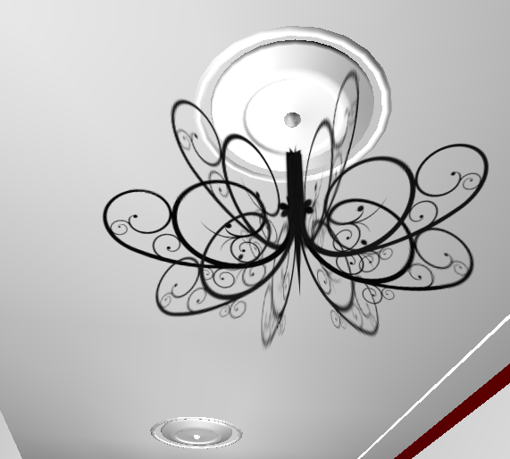Es muy interesante el resultado conseguido con tan solo ocho polígonos.
En principio sólo nos queda añadir un cilindro o un cubo y hacer con él la unión entre la lámpara y el techo.
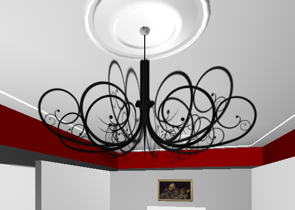